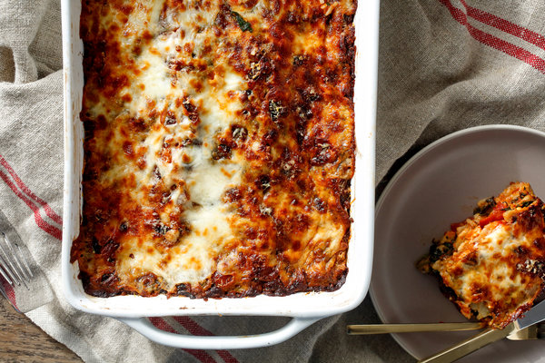

Lasagna Recipe

Description
A delicious meat-free lasagna as featured on the New York Times
Ingredients
- 12-16 dry lasagna noodles
- 3-4 cups GOOD tomato sauce
- 2 T Extra virgin olive oil
- 3 cups cooked spinach, squeezed dry
- 1.5 cups ricotta
- 1.5 cups coarsley grated mozzarella
- 2 cups grated parmesan
- Salt and pepper
Instructions
- If you're using dried pasta, bring a large pot of salted water to a boil. If you're using fresh pasta sheets, cut them into long wide noodles
approximately 3 inches by 13 inches, or a size that will fit into your lasagna dish. Cook the noodles (6 at a time for dried noodles)
until they are tender but still underdone (they will finish cooking as the lasagna bakes); fresh pasta will take only a minute.
Drain and then lay the noodles flat on a towel so they won't stick.
- Heat the oven to 400 degrees. Grease a rectangular baking dish with the olive oil, add a large dollop of tomato sauce and spread it around.
Put a layer of noodles (use four) in the dish, trimming any overhanging edges;
top with a layer of tomato sauce, one-third of the spinach, and one-fourth of the ricotta (use your fingers to spread it evenly),
the mozzarella and the Parmesan. Season with salt and pepper if desired.
- Repeat the layers twice, and top with the remaining noodles, tomato sauce, ricotta, mozzarella and Parmesan;
the top should be covered with cheese; add more ricotta and Parmesan as needed. (The lasagna may be made ahead to this point,
wrapped tightly and refrigerated for up to a day or frozen. Bring to room temperature before proceeding.)
- Bake until the lasagna is bubbling and the cheese is melted and lightly browned on top, about 30 minutes.
Remove from the oven and let rest a few minutes before serving, or cool completely, cover well, and refrigerate for up to 3 days,
or freeze.